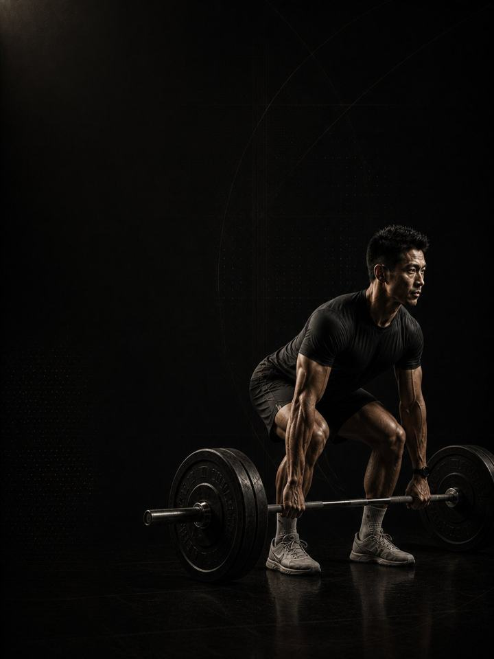

Foundation Strength
Build the base: strength, muscle and movement quality that everything else stands on.
- Built fornew to lifting
- Training days3 full-body days a week, with walking on the other days
- Session length50–60 minutes
- Equipmentfull gym, or dumbbells, a bench and bands
- Formatmobile PDF, every exercise linked to a demo video
The store opens soon. For now, Buy opens an Instagram message and you receive the PDF there.
Who it's for
People who are new to lifting, or returning after a long break, and want a clear plan instead of guessing. It starts with machines, so you can train hard while the movements are still new. It moves to free weights, then to heavier strength work. By week 12 you are lifting weights you could not lift in week 1, with technique that holds under them.
Not the right fit if sharp pain in one specific joint keeps coming back. Start with the matching AXIS corrective program first.
Your week
Three non-consecutive training days, done in order. Walk on the other days.
| Sun | Mon | Tue | Wed | Thu | Fri | Sat |
|---|---|---|---|---|---|---|
| Day 1 Lower body & core | Walk | Day 2 Upper body | Walk | Day 3 Full body | Walk | Rest: mobility and an easy walk |
Any three days work, as long as there is a rest day between them.
Every session runs the same way:
- Warm-up, 8–10 min. The same sequence each time. It also works as a movement check.
- Main lifts, 20–25 min. The first two or three exercises, with full rest between sets. This is where strength is built.
- Assistance, 15–20 min. The rest of the day's list, with shorter rest, tight form, and the top of the rep range.
Fifty to sixty minutes door to door. The order matters: heavy compound lifts come before assistance work, while you are fresh.
How the 12 weeks progress
Three phases of four weeks each. The weight climbs the whole way, while the exercises get harder to control: machines first, then free weights, then heavy strength work.
| Weeks 1–4 | Weeks 5–8 | Weeks 9–12 | |
|---|---|---|---|
| Phase | Movement competence | Hypertrophy | Maximal strength |
| Goal | Learn the movement patterns with controlled machine loads | Build muscle with free weights and more volume | Build maximal strength with heavy, low-rep lifting |
| Average effort | RPE 6.1 | RPE 7.1 | RPE 7.8 |
The block at a glance
Working sets per week, by what they train. The dashed line is effort.
Deload weeks: weeks 6 and 12 are lighter. You do half the sets with the same weights, so your progress shows and you retest fresh.
The rules that make it work
- The phase changes the exercise. The week changes the load. Every four weeks the exercises move up a level. Inside a phase, you add weight or reps session by session.
- Add weight when you earn it. When you hit the top of the rep range on every set with clean technique twice in a row, add 2.5 kg for upper body or 5 kg for lower body. Small jumps beat big ones that break form.
- Miss a week? Repeat it. Don't skip ahead. Twelve completed weeks beat sixteen half-finished ones.
- Two sessions is a real week. If life gets busy, do Day 1 and Day 2. Finishing three quarters of the program beats abandoning it.
Why machines first
Machines let you push hard while a movement pattern is still new. Once the pattern is learned, free weights carry the sessions. Load added to a pattern you can't control yet just makes you better at moving badly.
Terms
- Block: 12 weeks. This program. One block develops one set of qualities to a set standard.
- Phase (mesocycle): 4 weeks. Each one targets one quality. Four weeks is a choice, not a rule. The length follows the goal.
- Training week (microcycle): where effort climbs, sets are added and the deload lands.
- Training year (macrocycle): four blocks in order (Base, Build, Compete, Restore), about 48 weeks.
How you'll measure progress
You do four quick tests before week 1, then again at weeks 6 and 12: push-ups, bodyweight squats, a dead hang and a plank. They take about 20 minutes. The program includes a score sheet.
What good progress looks like
- Weeks 1–4: technique settles, and the soreness from the first two weeks fades.
- Weeks 5–8: free weights come in, the weights you lift climb, and the test numbers move.
- Weeks 9–12: real strength work, and the sessions start to feel routine instead of daunting.
The one number that predicts your result best is sessions completed.
Outside the gym
7,000–10,000 steps on most days and 7–9 hours of sleep. These two do more for body composition and recovery than any exercise choice. If you get one thing right outside the gym, make it sleep, because strength, appetite and motivation all follow it. Eat protein at every meal. A palm-sized portion is a good start.
Daily mobility, 10 minutes. The program includes a short routine for every day of the 12 weeks, rest days included. Mobility responds to how often you do it more than to how long. Ten minutes a day gives more usable range than an hour once a week, and it costs nothing in recovery.
The science
Every program in the library is built on published research, and how strong that research is gets stated, not implied. Where the evidence is limited, the page says so.
| Finding | Source | What it does not show |
|---|---|---|
| Strength training cuts sports injuries to under a third of the control rate. Stretching does not reduce them. | Lauersen, Bertelsen & Andersen, Br J Sports Med 2014. Meta-analysis of 25 RCTs, 26,610 participants. PMID 24100287 | Risk ratio 0.32 for strength training and 0.96 for stretching. The trials varied a lot, and dose was not standardised. |
| Every sensible prescription beats not training. Heavier loads rank highest for strength. Multiple sets rank highest for muscle size. | Currier et al., Br J Sports Med 2023. Network meta-analysis, 178 strength and 119 hypertrophy studies. PMID 37414459 | The differences between prescriptions were small, and all of them worked. |
| Muscle growth increases with weekly sets per muscle, in a graded dose-response. | Schoenfeld, Ogborn & Krieger, J Sports Sci 2017. Meta-regression, 15 studies. PMID 27433992 | About 0.37% more growth per added weekly set. The effect is graded, not unlimited, and studies rarely go beyond 10 or more sets. |
| Programs that include the Nordic hamstring exercise roughly halve hamstring injuries. | van Dyk, Behan & Whiteley, Br J Sports Med 2019. Meta-analysis, 15 studies, 8,459 athletes. PMID 30808663 | Risk ratio 0.49. It measures programs that include the exercise, not the exercise alone. |
Before you buy: get cleared first if
- You have chest pain, unusual breathlessness, palpitations or dizziness with exertion.
- You have uncontrolled high blood pressure, a known heart condition, or recent surgery.
- You are pregnant or recently post-partum. Get clearance and a tailored program first.
- You have sharp joint pain in one spot that won't settle. Start with the matching AXIS corrective program.
This program is general fitness guidance. It does not replace a medical assessment.
The store opens soon. For now, Buy opens an Instagram message and you receive the PDF there.
What's next
After 12 weeks:
- Train like an athlete: Athletic Development
- Build muscle: the Physique series
- One area needs work: the Corrective series